EX‑CommandStation/Booster One Express - Full Technical Manual¶
The EX‑CSB1 is the first fully integrated DCC Command Station with DC PWM and Booster Mode capabilities developed by the DCC-EX Team.
This versatile board can function as a complete Command Station with USB or WiFi connectivity or serve as a stand-alone booster, making it an ideal addition to any layout, including those using non-DCC-EX systems.
This page describes and explains the EX‑CSB1 in detail.
Important
If you are setting up your EX‑CSB1 for the first time we recommend that you look at the EX-CSB1 Quick Setup Guide page first.
Board layout¶
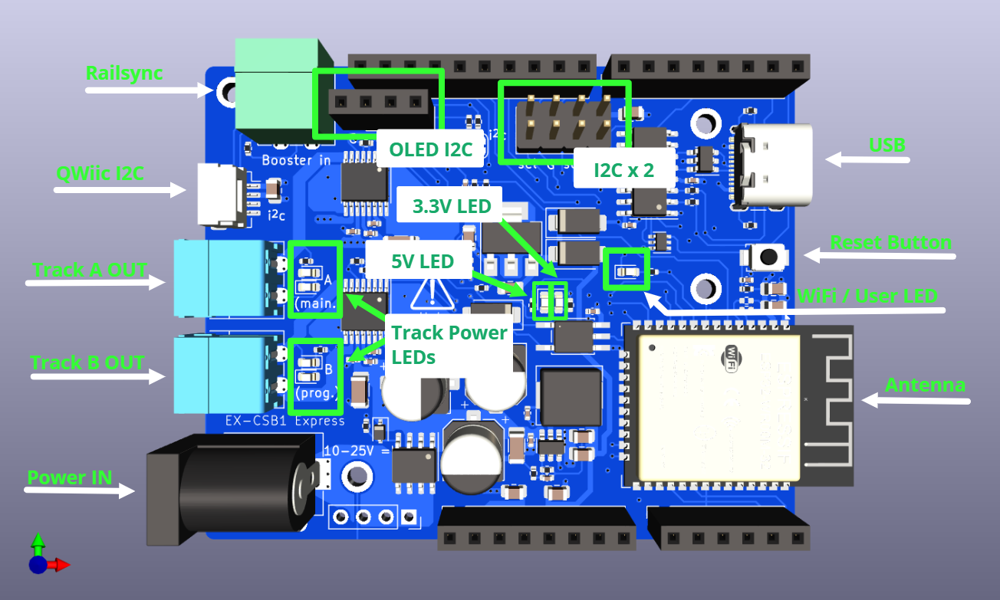
On the Board¶
Input Power Barrel Jack¶
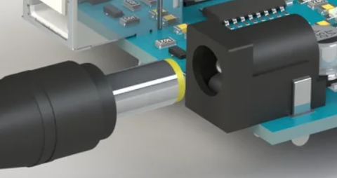
The EX-CSB1 normally comes with a barrel jack for compatibility with most laptop-type power
The EX‑CSB1 normally comes with a barrel jack for compatibility with most laptop-type power supplies that use a 2.1mm inner hole diameter and a 5.5mm outer shank diameter.
Be careful since some power supplies have a 2.5mm inner hole which is likely to be too loose. The barrel jack input power is reverse voltage protected. This supplies a 5V switching regulator for all electronics on the board including a 3.3V regulator for 3.3V components, an optional EX‑MotorShield8874 stacked on top, and power out to the track.
While it is capable of 10-25v operation, it is best to choose a suitable track voltage for your scale1. Typically this is 12-14v for N scale, and 14-16v for HO scale. With help in choosing your power supply or using one with bare wires instead of a barrel connector, see Powering the EX-CSB1 below.
USB-C Power/Data Connector¶
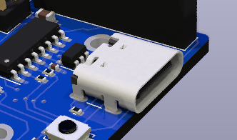
The USB connector can provide power from a computer or any 500mA or larger USB or USB-C Power Delivery (USB-C PD) power supply. In this way you can connect your EX‑CSB1 to a computer and update your software version or load EXRAIL scripts that run your accessories. However, without a power supply powering the DC input jack, you cannot supply power to the rails to run trains.
You can connect your track Power supply (see above) to the barrel jack while the USB is connected, as they will not interfere with each other. You may also wish to do this to isolate the EX‑CSB1 processor power from any interruptions to track power due to overload for example.
The USB port is also very useful for connecting a Serial Monitor to test the command station and view logging information in real time to aid in fault finding. See Using a Serial Monitor
Track A and B Outputs¶
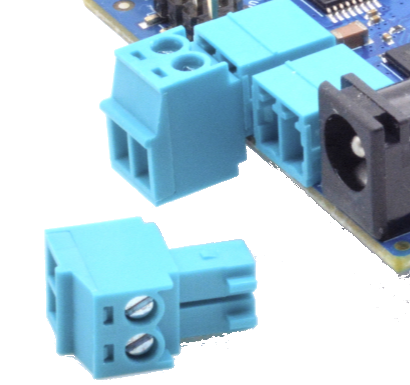
These are female pluggable terminals that accept a removable male screw terminal plug (included with your EX‑CSB1). Using the removable connectors allows for easy reconfiguration, testing, and placement of your command station. You can unsolder these connectors (or ask for a special order) and replace them with 3.5mm pitch screw terminals if you prefer.
For DCC operation, output A is usually the MAIN track and output B is the programming track. However, with our TrackManagertm feature, you can configure any output to be DCC, DC, MAIN, or PROG.
You should keep the phase of the tracks aligned, so if a train crosses from one power district to another it doesn't intentionally cause a short (unless it's a reversing loop and you have assigned that output to have Auto-Reverse capability.) See: Managing config files with the Installer.
Power to each output can be controlled together or individually. Correct wired gauge for the screw terminals is 16 to 28AWG (1.5mm^2). Be sure your wire gauge can handle the current you expect on the track.
Track Power LEDs¶
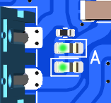
These are indicators that power is being sent to the track, and the mode of the output. With DCC operation, both LEDs should shine brightly when your throttle issues the power-on command.
You can also configure the EX‑CSB1 to start with power on using a mySetup.h or myAutomation.h file, or by selecting one of the options in EX‑Installer. See the EX-Installer page for more information on how to change this behaviour.
For DC PWM mode operation, when power is on, ONE LED will light for each direction. That is, forward will light one LED and when you select reverse, the other LED will light.
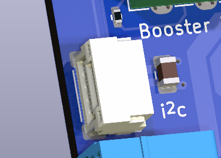
This is a standard for an I2C bus connection so that the same cable can be used to daisy chain I2C devices like displays, sensors, servos, etc.
Please note the pin connection order when making your own cables or when purchasing from discount sites that often wire them incorrectly. For example, red should always be positive power and black is negative DC or 'GND'.
!!!! IMPORTANT "3.3v" The voltage for this connector is ALWAYS 3.3V!`
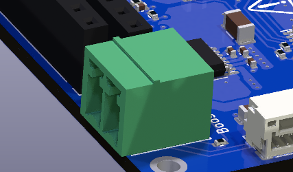
This is a standard Railsync input and is labelled 'Booster In' on the top of the board. Connecting a RailSync output from a Command Station or Booster will automatically switch the EX‑CSB1 to Booster Mode on receipt of an input signal when the EX‑CSB1 is running the appropriate EXRAIL script.
Again be sure to wire the DCC outputs to power districts with consistent phasing. Any voltage between 5V and 26V at the input will work. The Digitrax specification is from 12v to 26v. See the DCCWiki article on RailSync.
OLED I2C Header¶
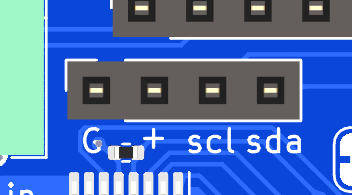
This header is primarily designed for an OLED display, but can also be used as a female header for any I2C device that has male pins or for use with Dupont jumper wires.
!!!! IMPORTANT "No standard pin order" Many .96' and 1.3' OLED displays, and some others will connect directly to the pins, however beware that sadly there is no standard for pin order.
Make absolutely sure that any display you purchase to connect directly to the header has its pins in the correct order! The correct order is GND, V+, SCL, SDA and is different than other OLED connectors on the board. For more information see: I2C Devices.
Dual I2C Header¶
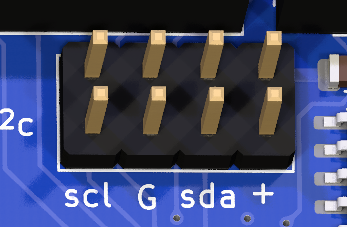
This is a dual male pin I2C header with 2 rows of I2C bus connectors one beside the other. They are wired together on the same I2C bus as the QWiic connector and OLED I2C Header.
Pin Order
The pin order on these two rows are different from the OLED header, pay attention to the pin order when using Dupont female wires. The correct order for this header is SCL, GND, SDA and V+ as labelled on the board.
The EX‑CSB1 is a 3.3V device, so all the I2C connectors only supply 3.3V unlike the Arduino Mega. Keep that in mind if you are upgrading from a DIY Arduino Command Station to a 3.3V device like the EX-CSB1 and are connecting I2C devices. For more information see: I2C Devices.
Reset Button¶
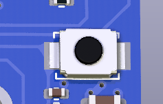
Pressing the reset button does a hard reset of the command station. If the Command Station gets into an unexpected state, you can reset it by pressing this button.
The DCC-EX software, EXRAIL Scripts, and any other settings are maintained, but the unit reboots as if it had been turned off. Boards stacked on top of the EX‑CSB1 also receive the reset signal, but less well designed boards may not be reset depending upon their own circuit peculiarities. Only rarely should it require unplugging all power from the EX‑CSB1 to perform a power-on hard reset.
ESP32 Microcontroller / WiFi / WiFi Antenna¶
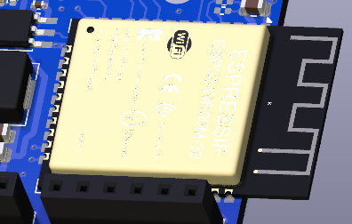
One microcontroller controls everything on the EX‑CSB1. It runs the EX‑CommandStation software, any mySetup.h file instructions, any myAutomation.h scripts, and provides the WiFi connection to throttles.
Be careful in your setup to protect WiFi antenna from being damaged from contact with anything or should the unit be dropped. For best WiFi performance, keep items at least 2cm (.75') from the antenna and do not allow any metallic objects to be near, underneath, or surrounding the antenna.
WiFi / User LED¶
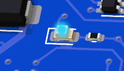
When WiFi is enabled, this LED will stay on. It is under software control in the EX-CommandStation software, so the LED can be repurposed to indicate a user defined function with an EXRAIL script or a <U> command function.
3.3V LED¶
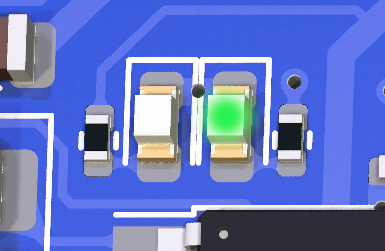
The 3.3V power LED will light whenever the 3.3V regulator is powered. This occurs when powered by USB, or from an external power supply connected to the barrel jack. This is simply an indicator that the circuitry on the board is powered.
5V LED¶
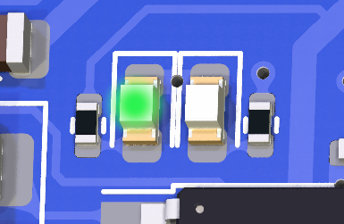
The 5V LED will light whenever power is supplied to the barrel jack. This LED indicates that power is being supplied to the 5V regulator which can power an EX-MotorShield 8874 stacked onto the GPIO Headers.
Power from the barrel jack will power the 5V regulator which in turn powers the 3.3V regulator. Therefore, when power is supplied via the barrel jack, both the 5V and 3.3V LEDs will be lit.
GPIO Headers¶
The 4 GPIO headers accept a DCC-EX EX‑MotorShield8874. The EX‑CSB1 itself has 2 outputs for 2 track power districts.
Stacking the EX-8874 on these headers provides 2 additional power districts for a total of 4. Any of the 4 outputs can be used for any combination of DCC MAIN, DCC PROG, or DC PWM. You must enable the extra board from the EX-Installer or your config.h file for a manual install. See the Adding an EX-MotorShield8874 section of this document.
OLED Display (not shown above)¶
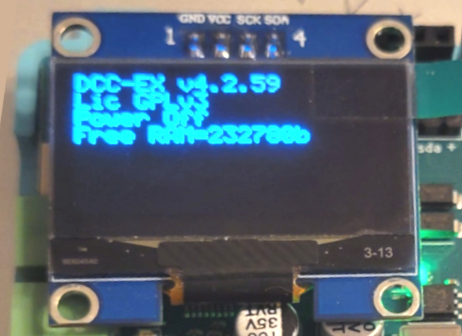
The OLED display provides diagnostics, status, and general information. The OLED display can also show output from EXRAIL scripts including user defined text. By default, the display shows the version number, license, power status, free memory, and if configured, your WiFi access point login information.
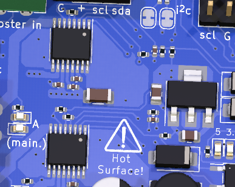
The entire area shown in the image to the right can get extremely hot during operation. Be careful not to touch this area at the top or bottom of the board to avoid being burned. This is especially true at high track current levels. Also be sure to provide proper ventilation to the board. If placed in a case, that case must have proper ventilation. Consider using proper vent holes and a fan if you intend to place the EX‑CSB1 inside an enclosure.
I2C Jumper Pads¶
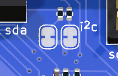
There are 2 solder pad jumpers on the EX-CSB1 labelled 'i2c'.
Unpopulated Power Connector¶
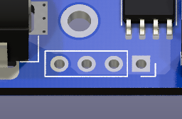
Power Pads¶
These unpopulated solder pads are used internally for testing and can provide power connections for an optional header. When operated without an EX‑MotorShield8874 on top, a user could remove the barrel jack and solder pins here capable of handling the 5A maximum current to power the board and the track.
Board Bottom Legend¶
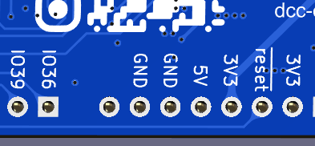
On the bottom of the board there are several markings such as the DCC-EX logo, board revision, and the QR code that links to this page on our website.
Additionally, important pins are labelled should you need access to them from the top of the board headers. Input/Output (GPIO) pins are labelled 'IO36', 'IO39', etc. GND, 5V, and 3.3V are also labelled. Note that when an EX-MotorShield8874 is stacked on top for extra power districts, there are no free GPIO pins left to connect accessories directly the EX‑CSB1. You must use the I2C pins and connect port expanders and/or servo boards to connect your accessories.
Powering the EX-CSB1¶
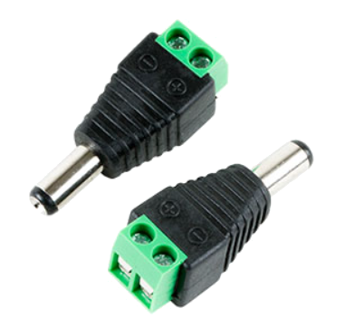
Terminal Adapter¶
The EX‑CommandStation/Booster One Express has a 2.1mm x 5.5mm power jack. If you already have a power supply with bare wires, you can use an optional 2.1mm x 5.5mm screw terminal block adapter. For more information about power supplies, including how to use one power supply to supply all the different voltages on your layout, see Power Supplies.
To power up the EX‑CSB1, just plug your power supply into the mains power (aka wall outlet) and connect the barrel end to the Command Station. Make sure your power supply matches the needs of your setup: the voltage should be between 12v and 25v DC, depending on the scale of your locomotives, and it should provide at least 2A of current with good over-current performance and voltage stability.
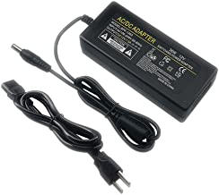
To get the most out of your EX‑CSB1, we suggest using a modern switching power supply with 4A or more. For Z scale, 12v is usually enough, but for N, HO, and OO scales, we recommend using between 14v and 16v DC2. It's important that your DC power is well-regulated which is why we suggest a modern switch-mode power supply with double insulation and strong overload protection.
Your power supply can be rated at or above the specified Amperage rating. You must not exceed the voltage rating of your device, but a little extra current is ok, since the EX‑CSB1 will only use as much as it needs. However, remember that both voltage and current can be dangerous.
When you connect power to the EX‑CSB1, you should see one or both bright green power LEDs light up, confirming that the electronics are working.
However, for safety, track power will be off by default when you first plug in the EX‑CSB1. This is to prevent power from accidentally being applied to your layout before everything is ready. See the EX-Installer page for more information on how to change this behaviour.
Connecting and Testing Your Command Station¶
What you will need¶
- An EX-CSB1 Command Station
- A Power supply (12-16v DC see Power Supplies)
- A DCC loco (DC can work also)
- Track
- A throttle (You can use your phone or a computer - see below)
- 16 to 28AWG/1.5mm2 Wire
- A Jeweller's flat bladed screwdriver (1.5 - 2mm blade)
- A laptop or other computer3
- A USB cable with one end a USB-C for the EX-CSB1, and the other to suit your PC*
Start with all power disconnected¶
Before connecting any wires to your command station or tracks, make sure you have unplugged the power supply from the wall or removed the barrel connector from the command station. It is crucial to ensure that the command station has no power while you are working on your connections.
Connecting to Your Tracks¶
The power connection to your track will be either wires you solder yourself to the rails or via a power connector that plugs into track such as Kato Unitrack. We will leave it up to you to determine the proper connection to your track.
Once you are sure power is disconnected from the CS and the power LED is no longer illuminated, you can connect wires from the A output (+ and -) of the command station to the track.
For DCC operation it does not matter which wire goes to which rail, since there is no polarity. However, as you layout grows, it is important to stay consistent with your wiring to ensure that different power districts remain in phase. That just means that when the tracks rapidly switch between one being energized and the other at ground potential, all the districts stay synchronised.
For DC operation, polarity does matter. One rail is positive, and the other is negative, which determines the direction your train will move when voltage is applied through the command station. If you reverse the voltage, the train will change direction and run in reverse.
DCC Operation - The Default¶
The EX‑CommandStation/Booster One Express is set to operate in DCC mode by default.
Optional DC Operation¶
Refer to DC Operation section for information.
Track Outputs¶
You will notice that the two track outputs on the EX‑CSB1 are labelled A and B. In the standard DCC-EX configuration of a EX-CSB1, A is configured for DCC MAIN operation, and B is configured for PROG or programming track output. We recommend connecting your track to the A MAIN output initially to test your Command Station. To alter this default configuration of DCC outputs, or for DC Mode, you would need to configure outputs with a TrackManager command in the mySetup.h file or via Routes. See the TrackManager page
The pluggable male screw terminals accept to 16 to 28 AWG/1.5mm^2 gauge solid or stranded wire. If you use stranded, we recommend 'tinning' the ends of the wire to make a good connection and ensure that stray wire whiskers don't stray outside the screw terminals and cause a short circuit. Larger wire can handle more current and provide less resistance. 18-22 AWG is a good start. Keep your wires short by mounting the CS close to the track. See the DCC Track Wiring Information page for more information on wire gauge.
Unscrew both screw terminals with a flat blade jeweller's screwdriver. The screws just need to be loosened enough to fit your wires into the holes. Tighten down both screws once you have inserted the wires.
Turning on Power¶
Now you can connect your track power supply to the barrel connector on the EX‑CSB1 and then plug the other end into the wall. You should see status information on the display including the EX‑CSB1 firmware version.
If you do not have a display or your display is not working, you will need to connect a serial monitor.
The EX‑CommandStation/Booster One Express will power up in WiFi Access Point mode as configured out of the box, with a WiFi network SSID of DCCEX_xxxxxx and password of PASS_xxxxxx, both of which will be visible on the OLED display (or Serial Monitor log) after it boots.
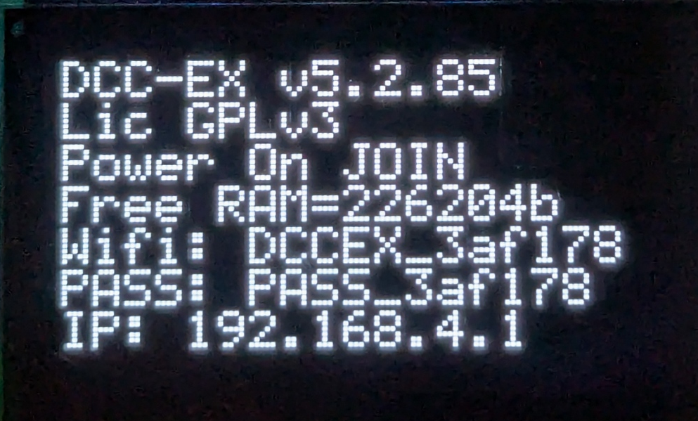
Access Point mode VS Station mode
-
Access Point (AP) mode creates a separate WiFi network on the Command Station itself. (Most useful if your layout is away from the house / home network, or you transport your layout frequently.)
-
Station (STA) mode allows the Command Station to join as a WiFi device on your home or layout WiFi network. We have the EX-CSB1 set to default to AP mode for convenience of being able to get up and running quickly.
The WiFi LED will illuminate once WiFi is configured and ready as an Access Point (or Station if reconfigured for STA mode.)
Connecting a Throttle¶
You can connect to the EX‑CommandStation/Booster One Express using both an app via WiFi on a smartphone or tablet, and/or on a PC using EX‑WebThrottle with the PC plugged into the EX-CSB1's USB-C port. Refer to the throttles list for throttle options.
Connecting via WiFi¶
Please connect your smartphone or tablet where you previously installed Engine Driver or wiThrottle to this WiFi network with the password shown on the OLED to begin running trains immediately!
You have nothing further to do to start using your DCC-EX EX‑CommandStation/Booster One Express. You can remove the protective cover on the OLED if you wish.
Connecting Via USB and EX-WebThrottle¶
You can connect to the EX‑CommandStation/Booster One Express using both an app via WiFi on a smartphone or tablet, and on a PC by using EX‑WebThrottle with the PC plugged into the EX-CSB1's USB-C port.
Connect the USB-C end of the USB cable to the EX‑CommandStation. Connect the other end to your computer or laptop on which you will run EX‑WebThrottle.
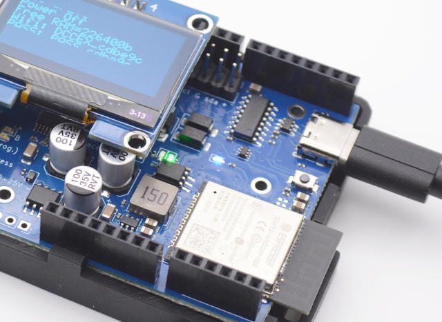
Note that 5V power is supplied with the USB connection, so the single green 3.3V LED illuminates (See figure). This powers the electronics on the board for basic testing and to apply software updates, but will not power the track outputs until power is applied through the barrel jack.
You do NOT need USB power for normal operation. The blue WiFi LED will also illuminate indicating the EX‑CSB1 is setup for a WiFi connection. And last, the display will show status information.
Running EX-WebThrottle¶
Begin by running EX‑WebThrottle by clicking this link. Detailed instructions are available on the EX-WebThrottle page.
DC Pulse Width Modulation (PWM)¶
The EX-CSB1 is set to operate in DCC mode by default. You can switch to any of the outputs to DC PWM mode.
The process to change the outputs to DC are described in detail in the TrackManager (DCC & DC) page.
Additional technical information about DC PWM are explained on our DCC vs DC PWM.
DC Operation¶
When using DC PWM mode with the EX‑CommandStation/Booster One Express, it is important to understand that this mode does not produce the traditional varying of the DC voltage to control the speed of your loco through a legacy Transformer. The speed of your train is controlled using a method called DC PWM (Pulse Width Modulation), so instead, the track always receives full voltage whenever the throttle is set above zero, just in pulses rather than continuously.
The EX‑CommandStation uses a loco (cab) address to control and drive a district/track with a number from 1 to 10239. So, you are controlling and driving a track with PWM and any analogue DC loco sitting on that DC district track, rather than controlling the loco itself.
As opposed to DCC which controls many locos on a DCC district directly through the individual DCC Address assigned to the decoder inside the loco.
The visual effect to a Engineer is that he can have one throttle controlling both DC and DCC locos from the actual road number that appears on the side of the loco. DC loco# 667 running on a separate DC district/track assigned 667, versus a DCC loco# 1225 running on a separate DCC Main line track with many other locos.
Use TrackManager to Set Outputs to DCC or DC Operation The EX‑CommandStation/Booster One Express is set to operate in DCC mode by default.
If you want to switch to any of the outputs to DC PWM mode, you can find instructions on how to do that on the TrackManager (DCC & DC) page.
Uploading the Software (Changing the Configuration)¶
Update firmware issues
We have found that there are a small number of users who can have an issue when trying to update firmware or upload EXRAIL scripts to an EX-CSB1 Command Station (or any ESP32 based device).
If you are having problems, look at our uploading troubleshooting guide. TODO MEDIUM - find link
The EX‑CommandStation/Booster One Express comes preloaded with the Command Station software, so you can start using it right out of the box.
However, if you wish to customise its configuration or update the software, you can easily do so by connecting the EX‑CommandStation/Booster One Express to your computer via USB and follow the steps below to make any changes you need.
First Time Connection¶
Step 1: Connect the EX-CSB1 to Your Computer¶
Locate the USB Port: Find the USB-C port on your EX‑CSB1. Use a Compatible USB Cable: Grab a USB-C cable that matches the port on your PC or laptop. This will likely be a USB-A to USB-C cable for older PCs and laptops, or a USB-C to USB-C for more modern PCs and laptops. Plug It In: Connect one end of the USB cable to the EX‑CSB1 and the other end to an available USB port on your computer.
Step 2: Install the Required USB Drivers¶
Automatic Driver Installation¶
In most cases, your computer will automatically recognise the EX‑CSB1 then you connect it and install the necessary USB serial drivers.
Manual Driver Installation¶
If you don't see a port listed there and are using a clone board, you may have to install a driver for a CH340 USB chip that is on these boards. See Drivers for the CH340 for detailed instructions.
Step 3: Download and Run the EX-Installer program¶
Download and run the EX‑Installer program on your computer following the instructions on the Install the Software page.
Changing the Configuration¶
On subsequent connections of your EX‑CommandStation/Booster One Express to you PC loading the drivers will be automatic.
You only need to run the EX‑Installer program on your computer following the instructions on the Install the Software page.
As the EX‑Installer program is updated periodically, it is worth checking from time-to-time to see if there is a new version by checking the EX-Installer page.
Uploading EXRAIL Scripts¶
EXRAIL is an 'EXtended Railroad Automation Instruction Language' that can easily be used to describe sequential command 'sequences' to automatically take place on your model layout. These sequences are defined programmatically in a simple command script file, and uploaded to the Command Station once to configure it. EXRAIL will then run automatically on EX‑CommandStation startup, trigger manually, or on occurrence of the specified events.
To find out more about EXRAIL and how to add them to your EX‑CommandStation/Booster One Express see the EXRAIL Automation & Animation page.
Factory Reset¶
The EX‑CommandStation/Booster One Express does not have a simple 'reset' button.
If you need to reset your EX‑CSB1 Command Station software to its default settings, you'll need to reinstall the software using the default settings. Follow these steps to reset the software:
Step 1: Disconnect Power¶
Before you begin, make sure the Command Station is powered off. Unplug the power supply from the wall or disconnect the barrel connector from the EX‑CSB1. This ensures that the system is completely powered down before the reset process.
Step 2: Connect to Your Computer via USB¶
Locate the USB Port¶
Find the USB port on your EX‑CSB1.
Use a Compatible USB Cable¶
Connect the EX‑CSB1 to your computer using the appropriate USB cable.
Power On¶
Plug the power supply back in or reconnect the barrel connector to power on the EX‑CSB1.
Step 3: Download the Latest Installer¶
Visit the DCC-EX Website¶
Go to the official DCC-EX website.
Save the Installer¶
Save the EX‑Installer file to a location on your computer where you can easily access it.
Step 4: Run EX-Installer¶
Open EX-Installer¶
Locate the downloaded installer file on your computer and double-click to run it.
Follow the On-Screen Instructions¶
Following the instructions on the Install the Software page.
EX‑Installer will guide you through the reinstallation process. During this process, the existing software on the EX‑CommandStation/Booster One Express will be overwritten with the default settings.
Complete the Installation¶
Allow EX‑Installer to complete the process. Once done, the Command Station will be reset to its original configuration.
Step 5: Verify the Reset¶
Launch the Command Station Software¶
After the installation is complete, power up the EX‑CSB1 to ensure it's running correctly with the default settings.
Check the Configuration¶
Confirm that the software has been reset by checking the basic settings and making sure they match the defaults.
Step 6: Reconfigure if Necessary¶
Customise Settings¶
If you need to adjust the settings to suit your layout, you can now do so within EX‑Installer.
Test Your Setup¶
Power up your layout and test the system to ensure everything is working as expected.
Connecting¶
USB Connection to a Serial Monitor¶
There are a number ways to open a Serial Monitor to the EX‑CommandStation/Booster One Express. They are discussed on the Using a Serial Monitor page, and any are acceptable.
To discuss just one of those options, which will likely be the easiest to do if you have recently installed the Command Station software using EX‑Installer. Simply click the Serial Monitor button when the the EX‑CSB1 is connected via USB to your PC.
USB Connection to JMRI¶
TODO MEDIUM - USB Connection to JMRI
USB Connection to JMRI
Connecting Optional Devices and Accessories¶
Integrated displays¶
TODO MEDIUM - Integrated displays
I2C Accessories¶
DCC-EX I2C Hardware Overview¶
The EX‑CSB1 allows you to expand your model railway setup by connecting various I2C accessories such as sensors, displays, and GPIO expanders. Using the DCC-EX EX‑Installer and additional tools, you can easily configure these accessories to work with your layout.
Step 1: Selecting I2C Accessories¶
Choose Compatible Accessories: Common I2C accessories include displays (e.g., OLED, LCD), sensors (e.g., temperature, distance), and GPIO expanders. Ensure your accessories are compatible with I2C and check the DCC-EX website for supported devices.
Step 2: Connecting Accessories to EX-CSB1¶
Locate the I2C Ports:
Use the 'I2C x 2' ports for general I2C devices.
Use the 'OLED I2C' port if you're connecting an OLED display.
Wiring the Devices:
SDA (Data Line): Connect the SDA pin on your accessory to the SDA pin on the EX‑CSB1.
SCL (Clock Line): Connect the SCL pin on your accessory to the SCL pin on the EX‑CSB1.
Power:
Depending on your device's requirements, connect the VCC pin to either 3.3V or 5V on the EX‑CSB1. Connect the GND pin to GND. Daisy-Chaining Multiple Devices: If connecting more than one I2C device, ensure each has a unique I2C address, which can be set via jumpers or configuration switches.
Step 3: Installing and Running the DCC-EX Installer¶
Download and Install:
Visit the EX‑Installer page to download the latest version. Follow the on-screen instructions to install the software on your computer. Run the Installer:
Connect your EX‑CSB1 to your computer via USB. Open the EX‑Installer. The installer will guide you through the initial setup, including basic configurations like setting up I2C displays. Configuring I2C Displays:
The installer will allow you to configure connected displays (such as OLED or LCD) directly during the setup process. For other I2C devices, further configuration may require manual adjustments using the EX‑CommandStation software or editing configuration files.
Step 4: Manual Configuration for Advanced Accessories¶
Access the EX‑CommandStation Software:
For advanced I2C accessories like sensors or GPIO expanders, you may need to manually configure them via the EX‑CommandStation software. This involves accessing configuration files or using a Serial Monitor to input specific commands.
Editing Configuration Files:
If necessary, open the configuration files provided with the EX‑CommandStation software to manually add and configure your I2C devices. Instructions for this can be found on the DCC-EX documentation pages.
Save and Apply Settings:
After configuring your devices, ensure you save and apply your settings through the CommandStation software. Step 5: Testing and Troubleshooting
Test Your Setup:
Once configured, power on your layout and check if the I2C devices are functioning correctly. Use the diagnostics tools provided by the DCC-EX software to troubleshoot any issues.
Troubleshooting Common Issues:
Double-check wiring connections and I2C addresses. If issues persist, refer to the troubleshooting guides on the DCC-EX website.
Additional Resources
For more detailed instructions and support, refer to these resources:
Adding an EX-MotorShield 8874¶
You can and an EX‑MotorShield8874 to provide an additional 2 outputs. You may want to do this if you want to split your DCC layout into separate power districts or if running DC PWM, create up to 4 blocks before you need to add a booster.
Additional information¶
-
The voltage you need for the Motor Driver depends on the scale/gauge of the layout you are using. Bigger is not always better. Too high a voltage can damage your locos. See the Powering the Motor Driver for more information. ↩
-
The voltage you need for the Motor Driver depends on the scale/gauge of the layout you are using. Bigger is not always better. Too high a voltage can damage your locos. See the Powering the Motor Driver for more information. ↩↩
-
Optional for connecting connecting to a computer for EX‑WebThrottle, JMRI and to reload the EX‑CommandStation software. ↩